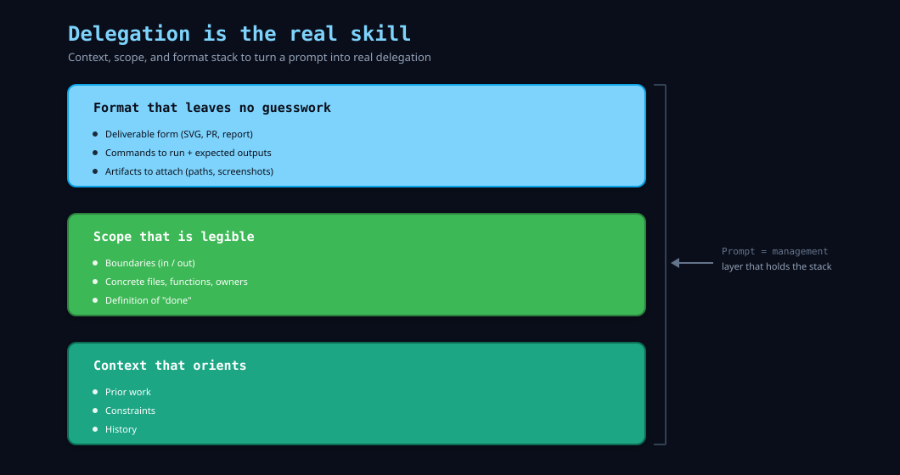

Delegation is the real skill

I fired off a /codex-task on a Friday with three bullets and went home feeling efficient. Monday the branch read like five different people had guessed. Wrong base, fuzzy definition of done, no story for why the feature existed—I’d bought faster keystrokes and skipped the management layer.
Since then I’ve treated the prompt as the management layer. Human contractor or /codex-task, the expensive part is the brief: why this exists, what’s already true in the repo, what artifact I need back, and how we’ll both know it’s finished. The stack amplifies whatever clarity I put in; vague intent comes back as confident mud.
When I delegate well, three ingredients show up every time.
Context that orients. I include the file paths already touched, the tickets already closed, and the constraints that hold steady regardless of implementation. If a database migration already shipped, I call it out. If the feature must respect a performance budget, I name the threshold. The agent cannot infer history I never give it. I pretend a colleague walked into the room mid-sprint and needed a one-minute download.
Scope that is legible. I draw the boundaries of the task in concrete terms—e.g. “Update api/reporting.py to emit the new metric and add verification in tests/test_reporting.py,” with file paths and a test hook the agent can point to. The agent needs to know where work stops so it can say “done” without me reading between the lines.
Format that leaves no guesswork. I specify whether I want a pull request, a patch file, a markdown summary, or a console log. I name the commands I’d like to see run and the artifacts to attach. The best subagent responses read like a handoff note from a meticulous teammate. That tone comes from the original prompt being explicit about format.
The tools make spinning up multiple agents trivial. The discipline is deciding when to do it and how to brief them. I still remember that broken Friday task when I get tempted to shortcut. Every time I slow down to write the brief like the recipient is new to the project, the work comes back solid. Delegation is the skill. Automation amplifies whatever the brief already encodes.